Honduras, which I visited solo in August 2026, was where my journey across Central America turned inward and adventurous. Setting off on my own from Guatemala, I based myself in the charming western town of Copán Ruinas, which was full of cobblestones and old men in cowboy hats. I got to explore one of the finest Maya sites anywhere. A small, ridiculous highlight of my time here had nothing to do with the ruins. I overheard a group of Spanish tourists marveling that a gringo could speak flawless Spanish, and it genuinely made my day. Honduras was a country I had been quietly warned about, and which turned out to be warmer and safer than its fearsome reputation suggested.
I split my time in Honduras between two very different places. Copán Ruinas is a delightful highland town near the Guatemalan border, its relaxed streets a fitting gateway to the great ruins that share its name. San Pedro Sula, by contrast, is the industrial engine of the north, a hot, busy commercial hub built on bananas and manufacturing. It also carries a heavy reputation, having been labelled, for a few grim years last decade, the most violent city in the world. I found that reputation to be out of date, but I could see where it came from. Wandering its Central Park, its cathedral, and its markets by day, I never once felt unsafe, only somewhat oppressed by the tangle of dangerously low-hanging power lines. That being said, I could tell San Pedro Sula was not the kind of place I would want to explore after dark.
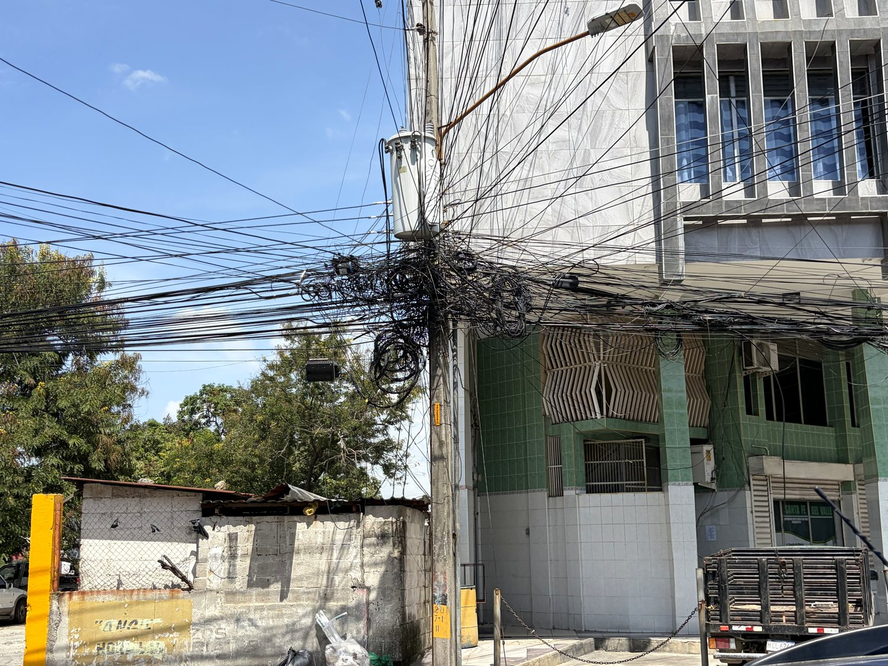
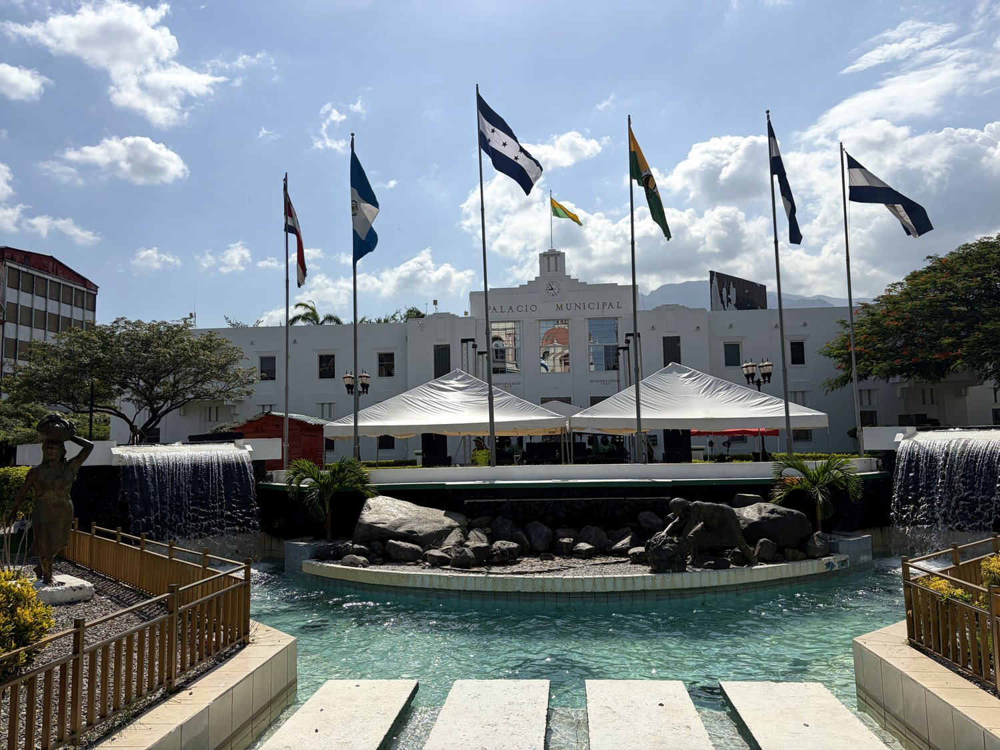
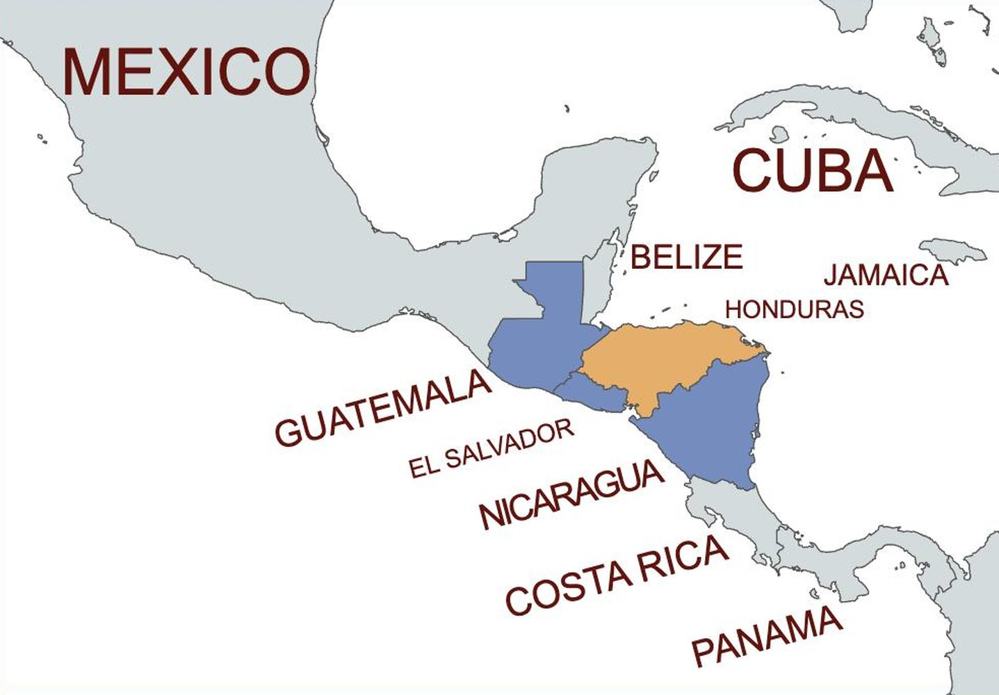
Honduras holds one of the crown jewels of the Maya world in Copán. This city’s ruins boast a breathtaking array of hieroglyphic inscriptions and stone figures. For centuries, a dynasty of sixteen kings ruled here, leaving behind the most detailed carved history of any Maya site. After the civilization declined and the Spanish conquered the region, Honduras became a quiet, mountainous colonial backwater, valued chiefly for its silver mines. Independence from Spain came in 1821, but stability did not follow, and the young nation lurched through decades of coups and civil strife.
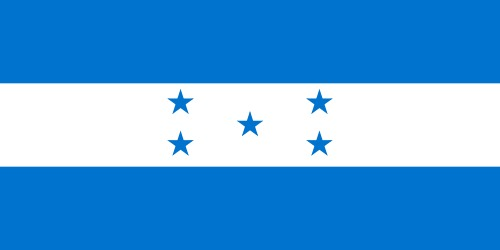
In the twentieth century, Honduras gave the world a phrase. American fruit companies came to dominate its economy and its politics so completely that the writer O. Henry coined the term "banana republic" to describe it. The United Fruit Company could make and unmake governments, and the country's fortunes rose and fell with the price of a single crop. That legacy of weak institutions and deep poverty later helped fuel the gang violence and the waves of northbound migration for which Honduras became known. The national flag carries a quiet dream of a different path: its five blue stars represent the five states of the old Federal Republic of Central America, and the hope, never quite abandoned, that they might one day reunite.
Just outside Copán Ruinas lies Macaw Mountain, a bird sanctuary that turned out to be one of the loveliest surprises of the trip. It is a rescue and rehabilitation centre, home to parrots and macaws that have been surrendered or confiscated from private owners. Walking among them, I was struck most by the scarlet macaws and the red-lored amazons, whose sharp, appraising stares leave no doubt that these are highly intelligent creatures. A keeper explained that birds raised here from a young age can usually be released back into the wild within a year. The work matters far beyond one sanctuary, too, for the scarlet macaw was sacred to the ancient Maya and is Honduras's national bird, and the wild population now flying free over the Copán ruins was itself repopulated from here.
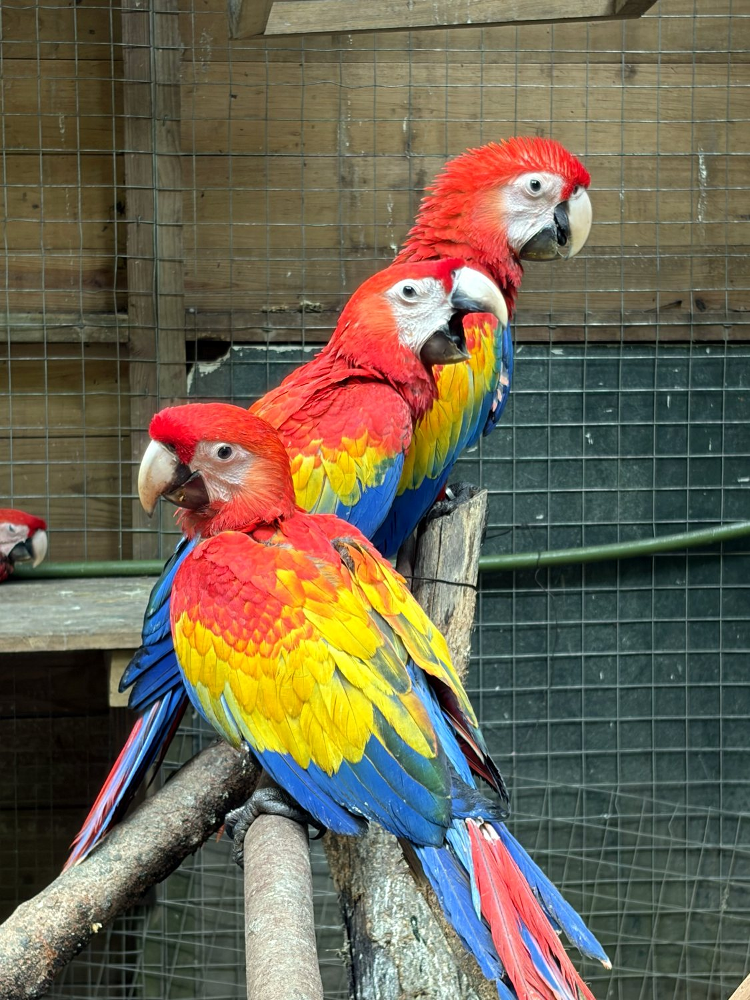
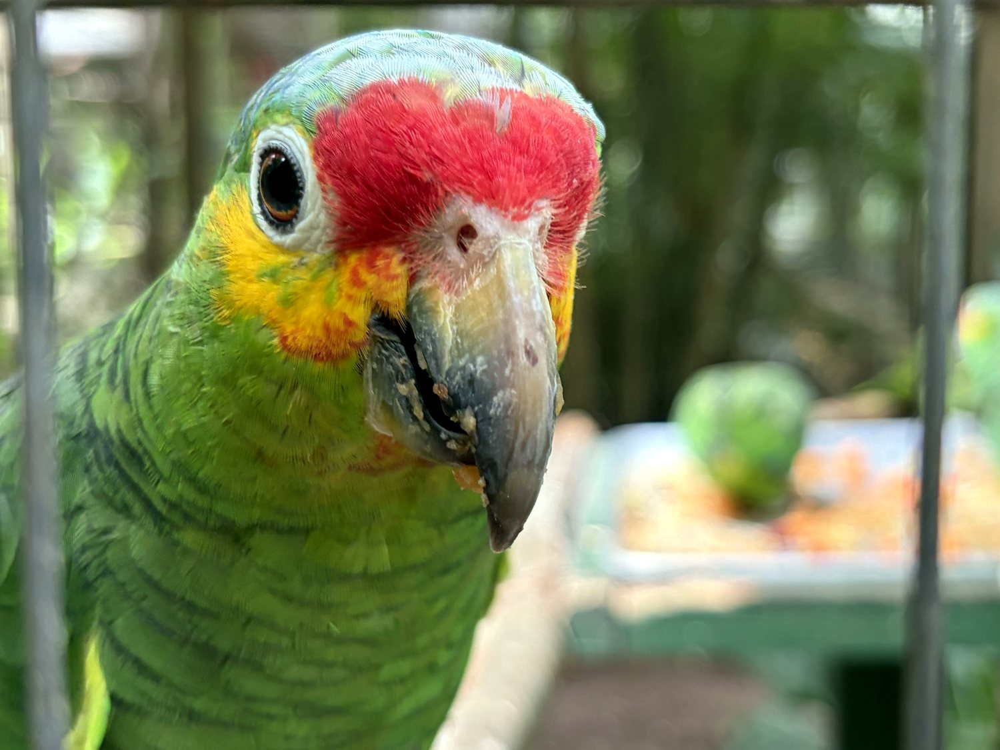
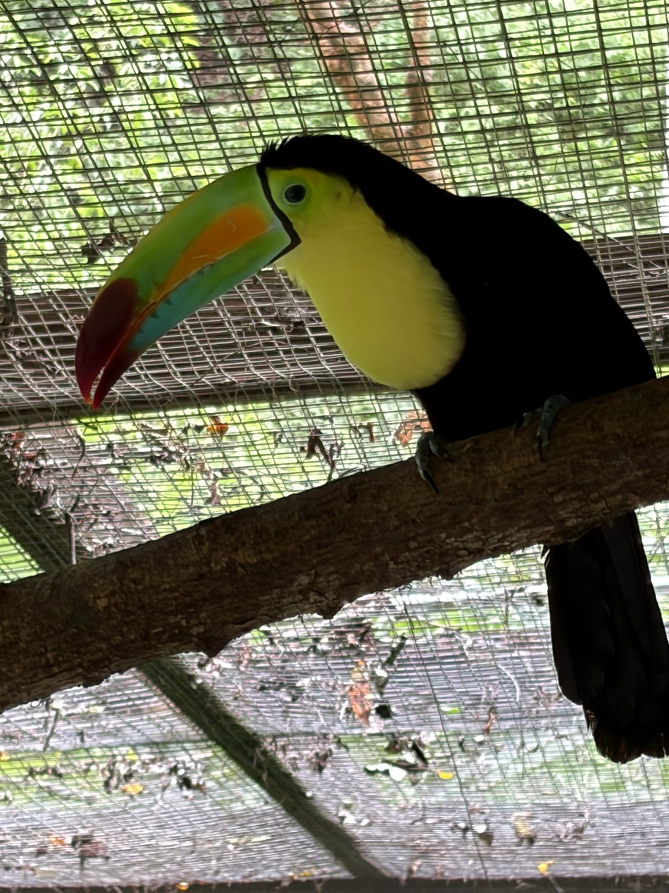
Copán is often called the Athens of the Maya world, and the comparison is earned. Where other cities impress by their scale, Copán astonishes by its artistry: intricate three-dimensional sculpture, elaborately carved stelae, and the famous Hieroglyphic Stairway, whose steps carry the longest known Maya text ever discovered. Wandering the site, I could trace the story of its sixteen kings, most vividly on Altar Q, which portrays the entire dynasty seated in succession. I loved the ball court ringed with carved macaw heads, the tunnels bored into the pyramids that reveal earlier temples and carvings hidden within, and the great trees whose roots now grip the ancient stones. Overhead, a raucous flock of scarlet macaws made the whole place feel gloriously alive.
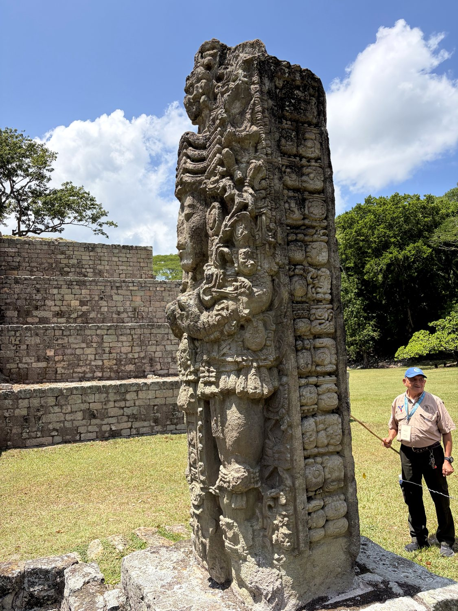
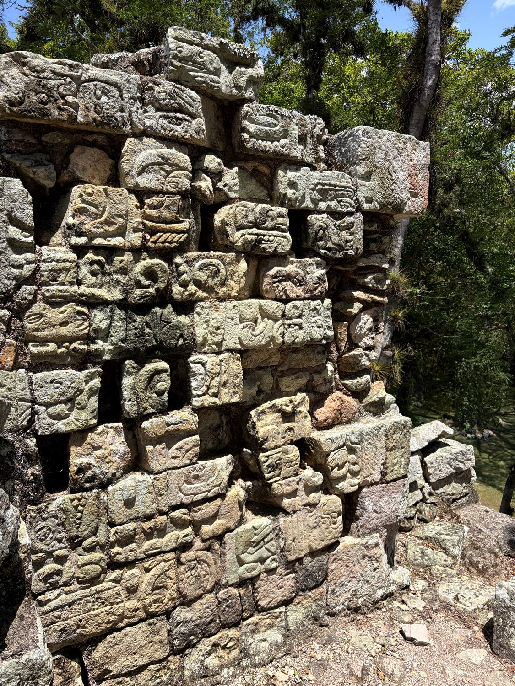
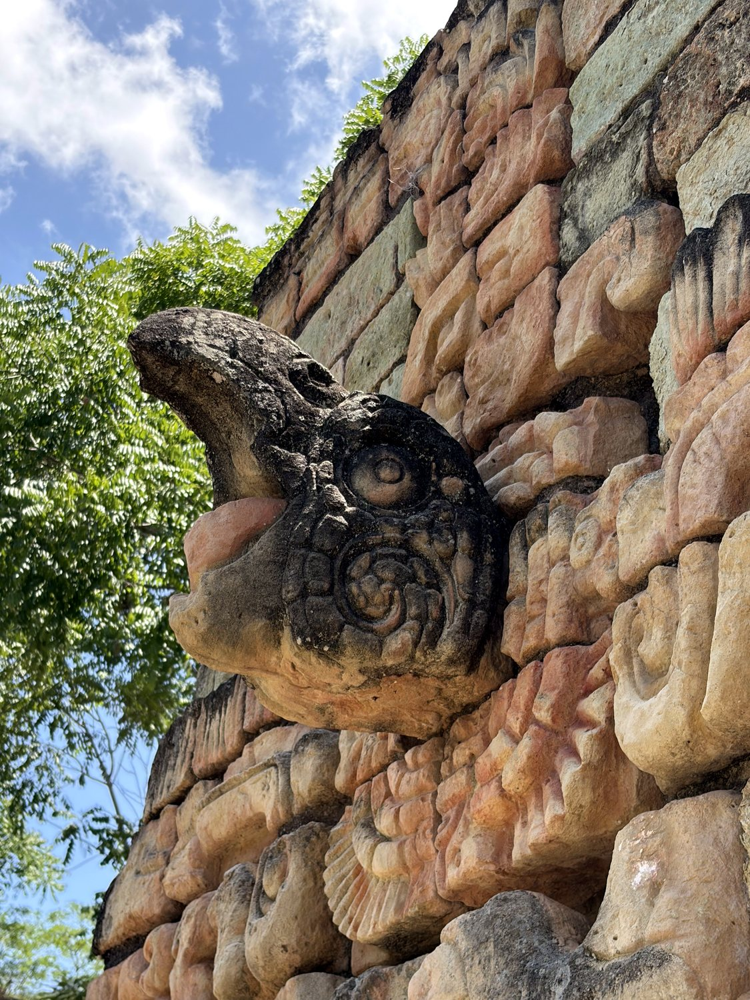
The leafy Central Park of San Pedro Sula, watched over by the white St. Peter's Cathedral, is an ordinary and pleasant civic square. Only a decade ago this city was routinely named the murder capital of the world, its homicide rate driven to catastrophic heights by street gangs, the drug trade, and the poverty and weak institutions that are the long inheritance of the banana-republic era. That violence was one of the engines of the migrant caravans that set out from this very city toward the United States. Sitting in the park among families and vendors, I found a city getting on with life, and one that was perfectly safe to navigate if one follows cautious safety precautions (which alas prevented me from exploring the city at night). It was a useful reminder that the headlines are rarely the whole story of a place.
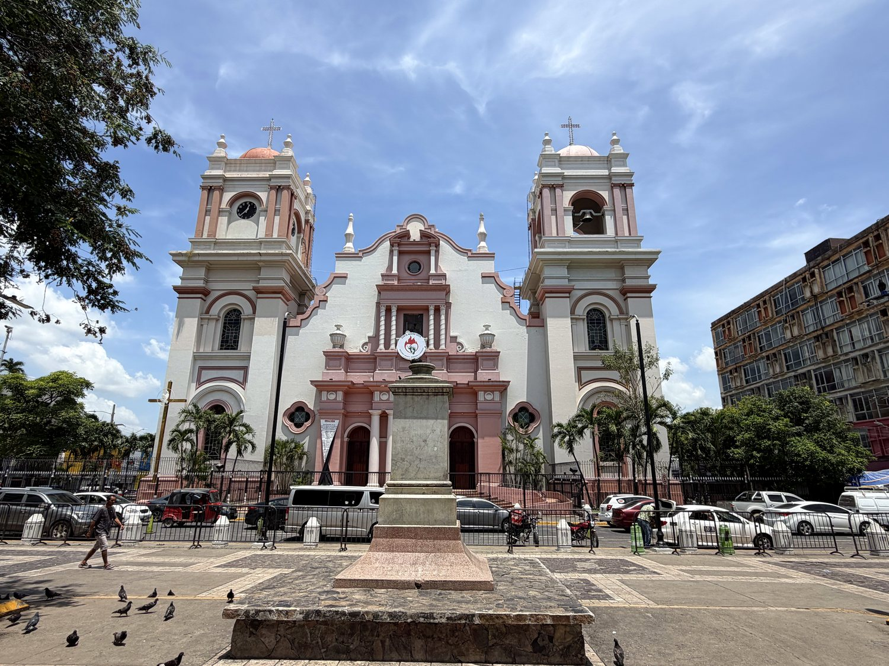